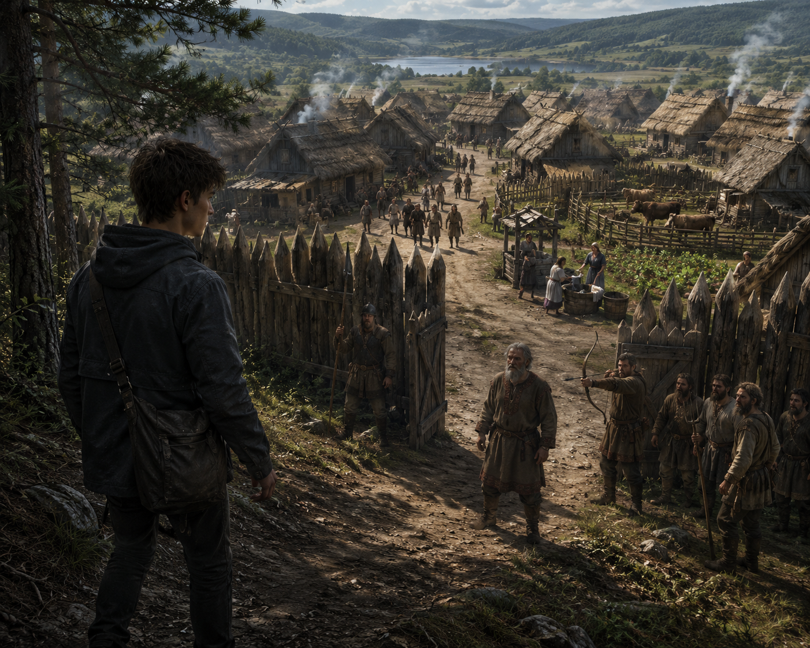
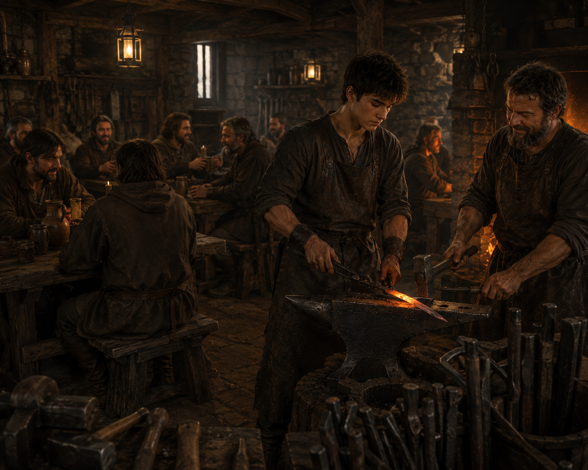
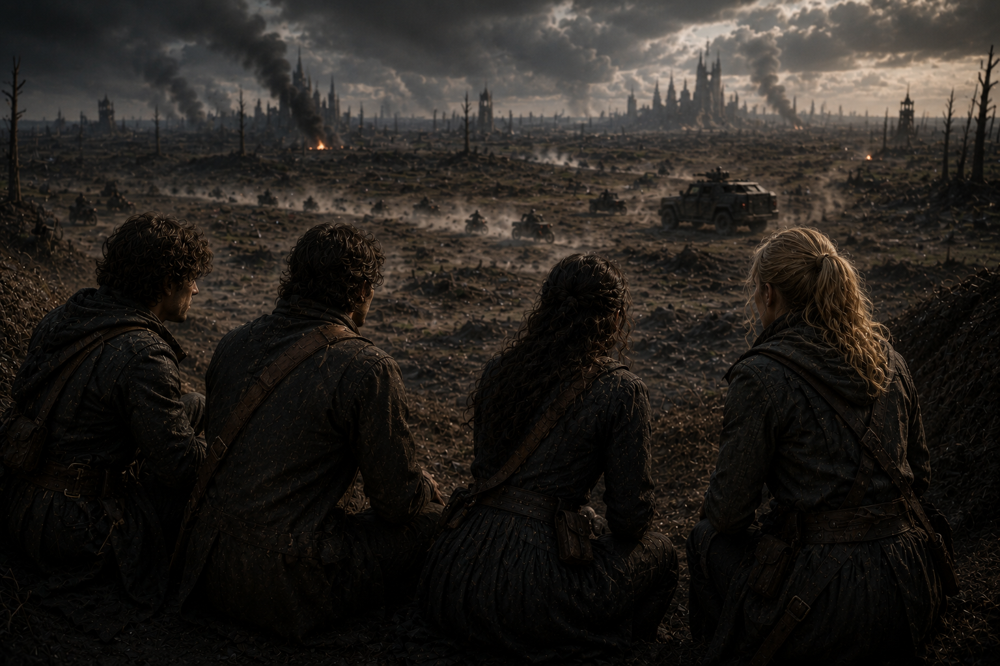
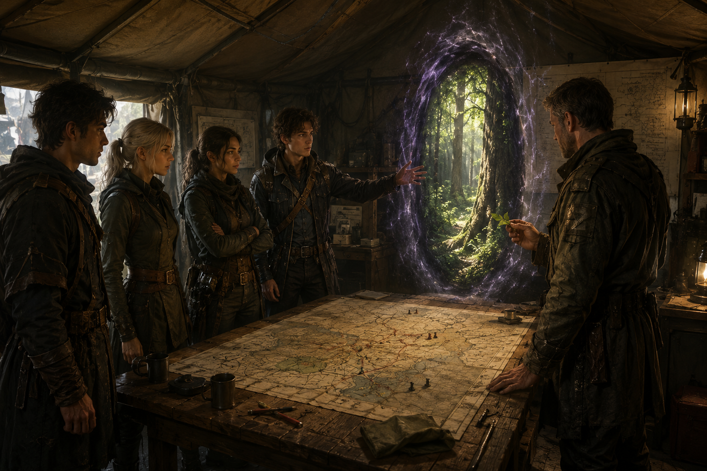

About the book
This story is part of Stories of Worlds, a collection that expands the Kharakternyky universe through other characters, worlds and eras.
Details
- Collection: Stories of Worlds
- Title: Nayrin: The Road Home
This story is part of Stories of Worlds, a collection that expands the Kharakternyky universe through other characters, worlds and eras.



